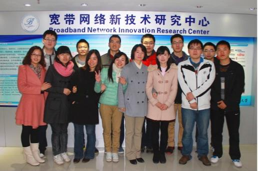

微波光子集成研究室
一 研究室负责人介绍
田慧平： 女，博士后，副教授，博士生导师。教育部新世纪优秀人才支持计划获得者，省优秀博士论文获得者，省高等学校科技进步奖一等奖。省科学技术进步奖一等奖获得者。主持了国家博士后科研基金，国家自然科学青年基金以及国家863项目，参加了多项国家级和省部级科研项目，包括国家自然科学基金、973和863项目等。在国内外重要学术刊物及会议上接收发表论文80余篇。
主要研究方向： 光通信、微纳光子器件、光子集成
二 研究室成员
组长：张艳红
成员：杨大全、申冠生、黄家钿、刘伟佳、赵腊梅、杨伊、吴南南、罗群、王阳、果争、刘琦、周健、王绪东
